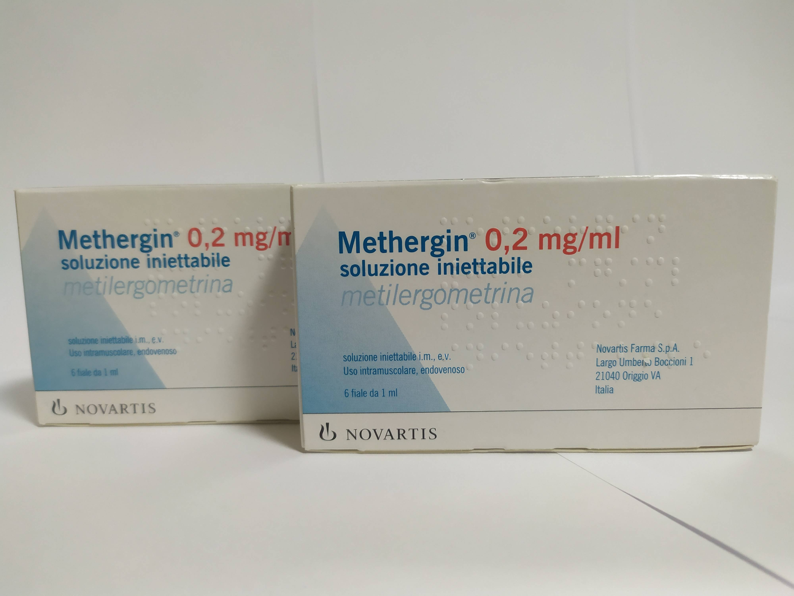

Контактная информация:
Цена: 500 грн/уп.
В наличии
Производитель: Италия
6 ампул в упаковке!Цена: 500 грн/уп.
В наличии
Именно в FarmItal вы можете купить купить метергин-(метилэргометрин)
/methergin(metilergometrina) в Украине, Гарантированно Качественный!
Доставка Methergin(Metilergometrina) осуществляется транспортными компаниями, сроки выполнения заказа оговариваются менеджером Фармитал. Вы можете заказать Метергин-(Метилэргометрин) в городах: Одесса, Херсон, Чернигов, Северодонецк, Бердянск, Бровары, Днепр, Винница, Киев, Славянск, Полтава, Краматорск, Белая Церковь, Каменское, Мариуполь, Черновцы, Александрия, Камь янец-подольский, Львов, Запорожье, Кропивницкий, Житомир, Ивано-Франковск, Сумы, Черкассы, Константиновка, Мелитополь, Кривой Рог, Ровно, Луцк, Никополь, Павлоград, Ужгород, Кременчуг, Лисичанск, Хмельницкий, Тернополь, Харьков, Николаев, а также в других населённых пунктах Украины.
Упаковка, содержащая 6 ампул раствора, а именно:
р-н для инъекций, 0,2 мг/мл по 1 мл в амп.
полусинтетическое производное природного алкалоида спорыньи (эргометрина), повышает тонус и сократительную активность биометрия, оказывает слабое действие на периферические сосуды, практически не повышает АД.
второй период родов (после появления передней части плеча плода), третий период родов, атонические маточные кровотечения; субинволюция матки, лохиометра; профилактика и лечение гипотонических кровотечений в раннем послеродовом периоде.
при активном проведении второго периода родов вводят в/в 0,1-0,2 мг (0,5-1 мл) метергина после появления передней части плеча плода; для родов в условиях общего обезболивания рекомендуется введение 1 мл метергина; при атоническом маточном кровотечении назначают 0,2 мг в/м или 0,1-0,2 мг в/в, при необходимости инъекции можно повторять с интервалом в 2 часа; при терапии субинволюции матки, лохиометры – 0,1-0,2 мг (0,5-1 мл) п/ш или в/м до 3 г/сут; при кесаревом сечении вводят после извлечения плода – в/в по 0,05-0,1 мг или в/м по 0,2 мг; при абортах назначают после расширения канала шейки матки в/в 0,1-0,2 мг; при спонтанных абортах показано в/в 0,05-0,1 мг.
Самолечение может быть вредным для вашего здоровья! Перед началом лечения обратитесь к вашему врачу!!
абдоминальные боли, тошнота, рвота, повышенное потоотделение, головокружение, головные боли, АР в виде кожной сыпи; АГ, брадикардия или тахикардия, спазм периферических сосудов; снижение секреции молока; редко – анафилактический шок.
Хранить в недоступном для детей месте при температуре не выше (до +15°С).